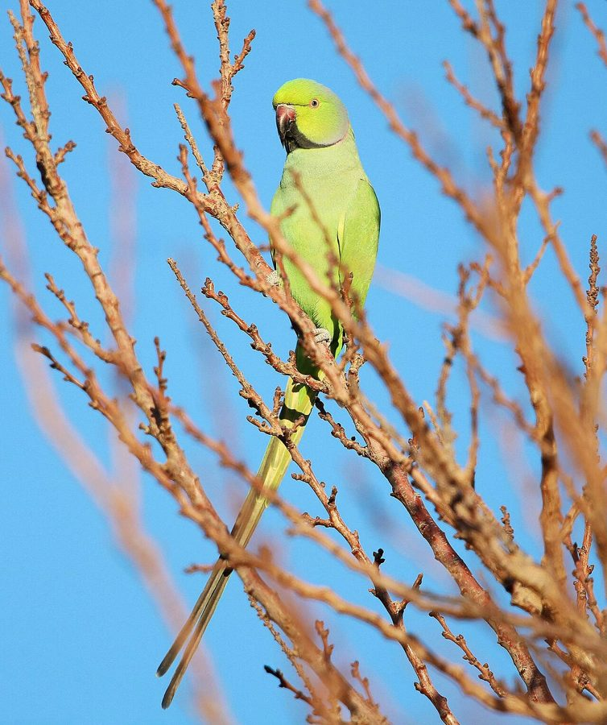

तोताRose-ringed Parakeet
Psittacula krameri · Psittacidae · BRD-0008

- Scientific name
- Psittacula krameri (Scopoli, 1769)
- Family
- Psittacidae
- Hindi
- तोता / हरा तोता / कंठी तोता
- Status here
- native
- IUCN
- LC
When to look कब देखें
Present all year.
तोता / Rose-ringed Parakeet
Psittacula krameri (Scopoli, 1769) — Psittacidae
तोता — हरा तोता पूर्वी उत्तर प्रदेश का एकमात्र तोता है — और यह हर जगह है। यह दुनिया का सबसे सफल तोता भी है — अंटार्कटिका को छोड़कर हर महाद्वीप पर पहुँच चुका है। लेकिन बस्ती और अयोध्या में यह देशी है और यहाँ की संस्कृति तथा बागवानी का प्राचीन हिस्सा है।
हिंदी परिचय Hindi Overview
तोता (Psittacula krameri) पूर्वी उत्तर प्रदेश का सबसे परिचित तोता है — हर आम के बाग में, हर गाँव में, और बहुत से घरों के पिंजरे में (हालाँकि पिंजरे में रखना अब क़ानूनन मना है)।
तोते को किसान दुश्मन मानते हैं — और गलत भी नहीं। यह गेहूँ, मक्का, आम, अमरूद, और लाल मिर्च को बड़े पैमाने पर नुकसान पहुँचाता है। लेकिन तोते की पारिस्थितिक भूमिका भी है — पीपल, बरगद, और अन्य फलों के बीज फैलाने में।
भारत में तोते का सांस्कृतिक स्थान गहरा है। काम के कंधे पर बैठा तोता, माँ का तोता, राजा का दूत — लोककथाओं में तोता हर जगह है। हिंदी में "तोते की तरह रटना" यानी बिना समझे दोहराना — यह मुहावरा ही इस पक्षी की पहचान बताता है।
Quick Identification त्वरित पहचान
| Feature | Description |
|---|---|
| Size | Medium-sized parakeet (38–42 cm total length including long tail); weight 95–140 g |
| Plumage | Bright green overall; yellowish-green below; pale blue wash on tail |
| Tail | Long, graduated, pointed; central tail feathers much longer than outer ones |
| Male collar | Narrow black band on lower throat, bordered above by a rose-pink band on the nape |
| Female collar | Plain green; collar or ring is absent; identical to immatures |
| Bill | Hooked, heavy bill; upper mandible bright red, lower mandible dark grey-black |
| Behaviour | Sociable, loud flocks; fast direct flight; nests in tree cavities |
Field tip: Look for the long, pointed tail in flight. Adult males develop the rose-pink and black ring around the neck after 2 years. They make a loud, screeching keeak keeak call that is audible from hundreds of metres away.
Morphology आकारिकी
Biometrics (subspecies borealis, northern India — the form in eastern UP):
| Measurement | Range |
|---|---|
| Total length | 380–420 mm |
| Wing (flattened chord) | 165–180 mm |
| Tail | 200–260 mm |
| Tarsus | 15–18 mm |
| Bill (culmen from base) | 22–26 mm |
| Weight | 115–145 g |
Plumage (male): Entirely bright green with slightly yellowish-green below. Adult male (2+ years) has a black stripe from bill base to eye (moustachial stripe), a black collar across the throat, and a rose-pink band across the nape. These features develop gradually — immature males show partial coloration, full ring develops at age 2–3 years.
Plumage (female): Entirely green; no collar, no ring, no moustachial stripe. Difficult to distinguish from immature males in the field.
Bill: Strong, hooked; upper mandible red, lower dark grey-black. Cere (fleshy base of upper bill) red.
Tail: Long, pointed; the two central rectrices (tail feathers) are elongated to 20–25 cm, giving the characteristic pointed tail silhouette that is visible even in fast flight.
Flight: Fast, direct, slightly undulating; pointed tail and wings create a very distinctive silhouette.
Vocalisations
The Rose-ringed Parakeet is extremely vocal and possesses a loud, shrill, screeching voice.
- Contact call: A loud, sharp, high-pitched keeak-keeak-keeak given in flight or while perched, functioning to keep flocks together.
- Alarm screech: A long, grating, frantic screech given when threatened.
- Chattering calls: Soft, conversational muttering and squeaking notes when feeding in canopy groups.
Ecological Role पारिस्थितिक भूमिका
Seed predator vs. seed disperser: The parakeet occupies a complex ecological role. It is primarily a seed predator — it destroys seeds rather than dispersing them intact. Its thick bill crushes mango stones, maize cobs, and wheat grains. However, for soft fruits (figs, berries, guava), it may act as a disperser when it drops or excretes intact seeds.
Fig relationship: Rose-ringed Parakeets are one of the primary consumers of peepal and banyan figs. The figs are swallowed whole and some seeds pass through the gut intact — making parakeets an important (if imperfect) seed disperser for these keystone trees.
Nest holes: Parakeets are obligate tree-hole nesters. They excavate holes in old mango, neem, and banyan trees — or take over existing holes (woodpecker holes preferred). They compete with mynas, starlings, and owls for nest holes. Large parakeet colonies in old orchard trees are ecologically valuable — the holes are later used by owlets, small bats, and other cavity-dependent species.
Flocking: Outside the breeding season, parakeets form large nomadic flocks — sometimes 100–500+ birds — that move between fruiting and grain resources. These flocks are extraordinarily mobile; a mango orchard ripening can attract flocks from many kilometres away.
Life Cycle / Phenology जीवन चक्र
- Breeding: December–May; peak February–April — one of the earliest-breeding birds in eastern UP
- Nest: Tree hole, 4–8 m above ground; prefers old mango, neem, or banyan trees; sometimes in building crevices
- Eggs: 3–6, white, round
- Incubation: ~22 days; female incubates, male brings food
- Fledging: ~7 weeks; fledglings remain with parents until the monsoon
- Lifespan: 15–25 years in the wild; long-lived for a bird of this size
Host Plants or Prey आहार
Primary diet:
- Fruits of mango (Mangifera indica), guava, and ber (Ziziphus mauritiana)
- Grains of wheat (Triticum aestivum) and maize (Zea mays)
- Figs of Peepal (Ficus religiosa) and Banyan (Ficus benghalensis)
- Nectar and flowers of Semal (Bombax ceiba) and Palash (Butea monosperma)
Predators / Natural Enemies शत्रु
- Shikra (Accipiter badius) — primary aerial predator of adults and juveniles
- Jungle Cat (Felis chaus) — stalks parakeets when they feed on ground grains
- Indian Rat Snake (Ptyas mucosa) — climbs tree trunks to raid nest cavities for eggs/chicks
- House Crow (Corvus splendens) — harasses nesting birds and targets fledglings
Agricultural / Human Relevance कृषि और मानव संबंध
Crop damage (significant):
- Mango: Parakeets begin attacking mango in March–April when fruit is still unripe — well before harvest. Bite through the skin, eating the developing flesh.
- Maize (corn): Entire maize cobs stripped; flocks can devastate a small field in hours.
- Wheat: Feeds on ripening wheat grain; damage often 5–15% of field yield in affected areas.
- Guava, ber, papaya: Eaten extensively.
- Sorghum and millet: Both heavily attacked at grain filling stage.
Economic loss: Parakeet damage is among the top 5 crop pest concerns for UP farmers alongside insects, rodents, and fungal disease. There is no effective non-lethal deterrent at scale.
Cultural significance:
- Tota (तोता) is one of the most deeply embedded birds in Indian culture — in Hindu mythology (Kamadeva's tota), in folk stories (the tota who tells the story), in the concept of mimicry-as-learning ("तोते की तरह रटना")
- Keeping tota as a pet remains extremely common despite being illegal under WPA 1972 — enforcement is weak
- Green color + ring = tota in the mind of every child in eastern UP; no confusion possible
Expected Locally स्थानीय रूप से अपेक्षित
Not a field record. Written from published accounts for eastern Uttar Pradesh. No confirmed local sighting yet — if you have seen it, that is what the atlas needs.
अभी तक स्थानीय पुष्टि नहीं। यह विवरण प्रकाशित स्रोतों से है, किसी अवलोकन से नहीं।
Extremely common and conspicuous throughout Basti district. Flocks are seen flying swiftly overhead with loud screeches. They are common in mango orchards during spring, and large numbers feed on ripening wheat fields in early summer. Communal roosts containing hundreds of birds are situated in tall Eucalyptus and Banyan trees on the edges of towns.
Distribution वितरण
Global range: Native to sub-Saharan Africa and South Asia (Pakistan, India, Nepal, Bangladesh, Sri Lanka, Myanmar); widely introduced and highly invasive in Europe, North America, the Middle East, South Africa, and East Asia, thriving in urban parks and agricultural lands.
In India: Widespread and abundant throughout the country, from the plains up to 2,000 m in the Himalayan foothills.
In Uttar Pradesh: Abundant year-round resident in all districts, heavily associated with orchards, agricultural plains, and human settlements.
In Basti district / eastern UP: Abundant resident; found in every village orchard, agricultural field, town garden, and old tree grove.
Range notes: No significant range changes documented.
Research Questions शोध प्रश्न
Anyone can investigate these | कोई भी इन प्रश्नों की जाँच कर सकता है
- How many parakeets attack a mango tree when the fruit is forming? / आम पर फल बनते समय कितने तोते आते हैं? — Count birds on one tree during a 30-minute watch in March–April. Record time of day — early morning attacks are most common.
- Are any tree holes in your village currently used by parakeets? / आपके गाँव में किस पेड़ के छेद में तोते घोंसला बनाते हैं? — Observe old mango or neem trees between December and April; watch for nest hole activity.
- What is the flock size of parakeets visiting a ripe guava orchard? / पके अमरूद के बाग में तोतों का झुंड कितना बड़ा होता है? — Count a visiting flock and record the timing. Do flock sizes change across the fruiting season?
- Do parakeet flocks have seasonal patterns? / तोतों के झुंड मौसम के साथ बदलते हैं? — Track flock size and location monthly for one year. When are the largest flocks, and where are they coming from?
- Which fruits do parakeets prefer in your area, and which do they avoid? / तोता आपके क्षेत्र में कौन सा फल सबसे पहले खाता है? — Set up multiple fruit types; observe which are attacked first. Species-level fruit preference data barely exists for Indian populations.
Similar Species मिलती-जुलती प्रजातियाँ
| Species | How to tell apart | हिंदी |
|---|---|---|
| Alexandrine Parakeet (Psittacula eupatria) | Much larger (53–58 cm); male has large red shoulder patch; deeper red bill | सिकंदरी तोता — बड़ा, कंधे पर लाल |
| Plum-headed Parakeet (Psittacula cyanocephala) | Male: red-purple head; female: grey head; smaller (36 cm); not commonly found in open farmland | आलू सिर तोता |
| Vernal Hanging Parrot (Loriculus vernalis) | Tiny (14 cm); bright green; red rump; hangs upside down; Kerala/forest habitat | हरी तितरी — छोटी, उल्टी लटकती |
Field rule: Large all-green parrot + long pointed tail + loud screeching flight + eastern UP village = Rose-ringed Parakeet. The only parakeet of the region. Male's rose ring visible at close range; the pointed tail silhouette identifies the species even in fast overhead flight.
Taxonomy & Classification वर्गीकरण
Original description. Psittacula krameri was described under the name Psittacus krameri by Giovanni Antonio Scopoli in 1769 in his work Annus I Historico-Naturalis (p. 31). Type locality: Senegal (erroneous; subsequently identified as India). The genus name Psittacula is a Latin diminutive meaning "little parrot". The species name krameri* honours the Austrian naturalist Wilhelm Heinrich Kramer.
Subspecies. Four subspecies are recognised globally. The form in northern India and eastern UP is:
| Subspecies | Authority | Range | Notes |
|---|---|---|---|
| P. k. borealis | Neumann, 1915 | Pakistan, Northern India, Nepal, Bangladesh, Myanmar | UP subspecies; larger than the African subspecies and the southern Indian form P. k. manillensis |
Family and order placement. This species belongs to the order Psittaciformes and family Psittacidae (true parrots). Psittacidae is a diverse family containing ~350 species globally. The genus Psittacula (~15 species) represents the typical Afro-Asian parakeets.
Phylogenetic notes. Recent molecular phylogenetic analyses (such as Kundu et al., 2012) suggest that the genus Psittacula as traditionally defined is paraphyletic. Some authorities split it, placing P. krameri in the resurrected genus Alexandrinus, though traditional nomenclature remains widely used.
IUCN status rationale. Assessed as Least Concern (LC). The species has an extremely large geographic range and a stable to increasing global population. It is highly adaptable to human-dominated agricultural and urban landscapes, which provide abundant food resources.
Photo Gallery फोटो गैलरी
Note: Add field photos tomedia/species/rose_ringed_parakeet/
फोटो निर्देश: नर की गुलाबी अँगूठी दिखाते हुए (close-up), उड़ते हुए (लम्बी पूँछ), झुंड में मक्का पर, और पेड़ के छेद में।
Photos needed आवश्यक फोटो
- [ ] Male close-up — showing rose-pink ring and red bill (गुलाबी अँगूठी + लाल चोंच)
- [ ] Female — plain green (मादा — सादी हरी)
- [ ] In flight — long pointed tail silhouette (उड़ते — लम्बी नुकीली पूँछ)
- [ ] Flock feeding on mango or maize (झुंड — मक्का / आम पर)
- [ ] At nest hole in tree (पेड़ के छेद में)
Atlas Connections संबंधित प्रजातियाँ
- Peepal — major food plant; parakeets are important peepal fig consumers and partial seed dispersers (FLR-0006)
- Banyan — also feeds on banyan figs; shares the fig-consumer guild with flying fox and myna (FLR-0010)
- Mango — significant crop pest; attacks fruit from March onward; major conflict species for mango farmers (FLR-0011)
- Paddy — attacks ripe paddy grain; flocks visible in October fields during harvest (FLR-0014)
- Common Myna — competes for tree holes; parakeet generally wins due to size; both part of the village bird community (BRD-0006)
- Indian Flying Fox — co-consumer of figs; both active in peepal and banyan canopies (MAM-0001)
References संदर्भ
- Scopoli, G.A. (1769). Annus I Historico-Naturalis. C.G. Hilscheri, Lipsiae, p. 31. [original description]
- Neumann, O. (1915). Neue Rassen von Psittacula krameri. Ornithologische Monatsberichte, 23, 178–179. [description of borealis]
- Ali, S. & Ripley, S.D. (1987). Handbook of the Birds of India and Pakistan. Vol. 3. Oxford University Press, New Delhi.
- Grimmett, R., Inskipp, C. & Inskipp, T. (2011). Birds of the Indian Subcontinent. 2nd ed. Christopher Helm, London.
- Kundu, S. et al. (2012). Evolution and biogeography of the Parakeets of the genus Psittacula. Molecular Phylogenetics and Evolution, 64(2), 269–283.
- BirdLife International (2024). Psittacula krameri. IUCN Red List of Threatened Species. Ver. 2024.
- GBIF Occurrence Data — Psittacula krameri, Uttar Pradesh (2010–2025).
Source file: species/fauna/birds/rose_ringed_parakeet.md